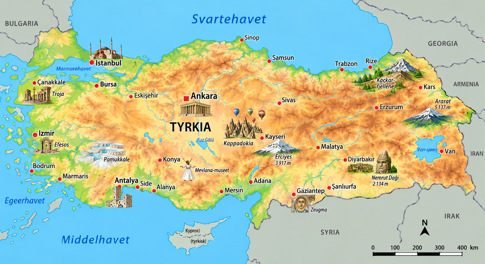
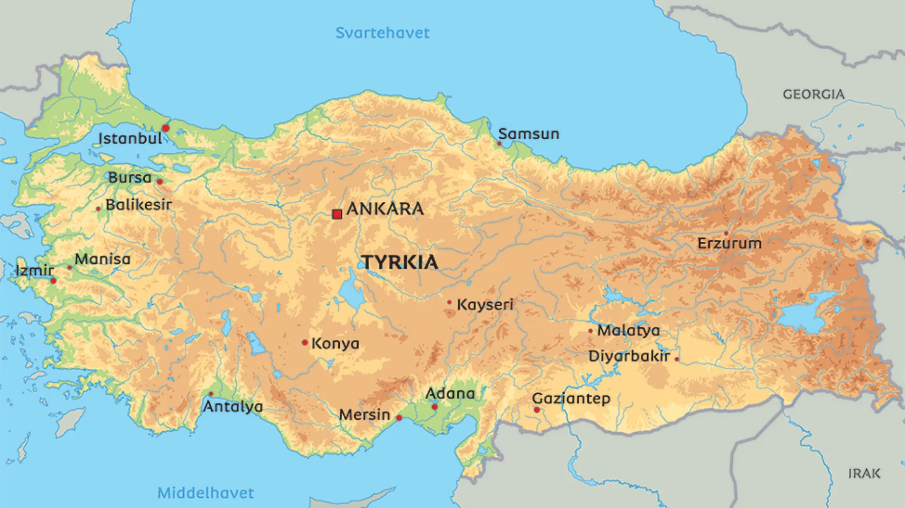

⚡ Korte fakta om Tyrkia
🗺️ Kart over Tyrkia
Klikk på et av kartene for å åpne og zoome i fullskjerm!


1. Natur og klima
Tyrkia har en helt spesiell beliggenhet! Landet ligger både i **Europa** og **Asia**, adskilt av det berømte Bosporostredet.
Det mektige fjellet Ararat rager hele 5 137 meter over havet og har snø på toppen hele året!
Kysten i sør kalles «Turkise Kysten» med sine varme sommerdager og krystallklare hav.
Kjent for sine magiske stein formasjoner kalt «fe-piper» og hundrevis av varmluftballonger i luften.
Dyreliv: I fjellene kan du finne brunbjørn, ulv og villgeiter. På stranden ved Dalyan legger de sjeldne glattkaretthalsskilpaddene (Caretta caretta) eggene sine!
2. Folk og samfunn
I Tyrkia bor det ca. 85 millioner mennesker. Tyrkere er verdenskjent for sin varme gjestfrihet og gode te-kultur!
🏢 Største byer i Tyrkia
- 🔹 Istanbul: Landets største by – spenner over to kontinenter!
- 🔹 Ankara: Hovedstaden og det politiske sentrum.
- 🔹 Andre store byer: İzmir ved Egeerhavet og feriebyen Antalya.
☕ Gjestfrihet & Te (Çay)
Når du besøker noen i Tyrkia, blir du nesten alltid tilbudt et lite tulipanformet glass med varm, rød te (çay).
Gjestfrihet står veldig høyt i kurs, og gjester blir behandlet som æresgjest uansett hvor de kommer fra.
🗣️ Språk og kultur
Det offisielle språket er tyrkisk, som skrives med det latinske alfabetet. Kurdisk snakkes også av mange i de sørøstlige delene av landet.
3. Stat og politikk
Tyrkia er en republikk som ble grunnlagt i 1923 etter Det osmanske rikets fall.
Laster...
Tyrkias president og statsoverhode.
Millet Meclisi
Det tyrkiske parlamentet (Den store nasjonalforsamlingen) beliggende i Ankara.
📍 Tyrkia er delt inn i 81 provinser (il), der hver provins ledes av en guvernør.
4. Tyrkias historie
🏺 Sivilisasjonens vugge (ca. 9000 f.Kr.)
Göbekli Tepe i sørøstlige Tyrkia er regnet som verdens eldste kjente tempelkompleks!
🏛️ Antikkens riker og Troja
Greske og romerske riker blomstret her. Den sagnomsuste byen Troja lå vest i dagens Tyrkia.
🕌 Det osmanske riket (1299–1922)
Et av verdens mektigste imperier gjennom tidene strakte seg over tre kontinenter med Istanbul som hovedstad.
 Republikken grunnlegges (1923)
Republikken grunnlegges (1923)
Mustafa Kemal Atatürk samlet landet og opprettet den moderne republikken Tyrkia.
🌉 Bosporos-broene og modernisering
Store hengebroer knytter i dag Europa og Asia fysisk sammen over Bosporostredet.
5. Økonomi og næringsliv
Hva lever de av i Tyrkia? Landet har en stor industri med alt fra bilproduksjon og tekstiler til deilige matvarer og turisme!
Turisme
Millioner av besøkende drar til historiske steder og strender hvert år.
Hasselnøtter
Tyrkia produserer over 70% av verdens hasselnøtter (bra for sjokolade!).
Tekstil & Klær
Produserer klær, bomull og tepper som eksporteres til hele verden.
Bilindustri
Bygger millioner av biler og busser for det europeiske markedet.
6. Kultur og underholdning
🏫 Skole og sport
Skolen i Tyrkia er obligatorisk fra barna er 6 år gamle.
⚽ Tyrkias mest populære sporter:
Fotball (Galatasaray, Fenerbahçe, Beşiktaş), basketball og oljebryting!
🌟 Kjente tyrkere
- 👑 Mustafa Kemal Atatürk: Grunnleggeren av det moderne Tyrkia.
- 📚 Orhan Pamuk: Berømt forfatter som vant Nobelprisen i litteratur.
- ⚽ Arda Güler: Ung fotballstjerne som spiller for Real Madrid.
- 🍕 Nusret Gökçe (Salt Bae): Verdensberømt kokk og internettfenomen.
🧠 Test deg selv: Tyrkia-Quiz!
Spørsmål laster...